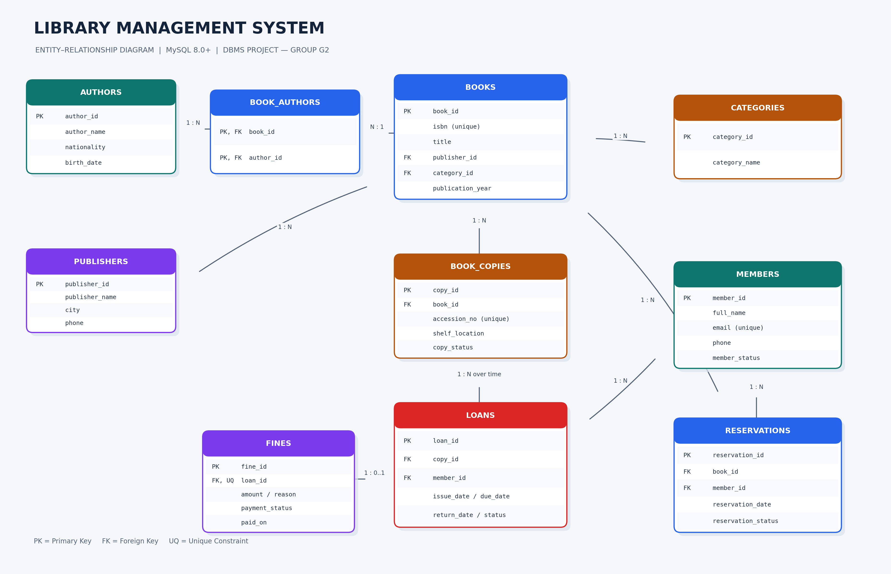

A MySQL database that tracks books, physical copies, members, loans, reservations and fines. Built for our DBMS project by Group G2.
Books and their physical copies are separate, so one title can have many copies and each loan points to one specific copy.

Every table matches the SQL script.
Author name, nationality and birth date.
Publisher name (unique), city and phone.
Subject categories such as Fiction or Database Systems.
One row per title: ISBN, publisher, category, year, edition, language.
Links books to authors, so a book can have many authors and the reverse.
Each physical copy with accession number, shelf and status (available, issued, lost, damaged, withdrawn).
Library members with unique email and status (active, suspended, closed).
Issue, due and return dates for a copy borrowed by a member.
A waiting queue for titles with no copy free.
At most one fine per loan, with amount, reason and payment status.
Open one to read it. The full set of 12 is in the SQL script.
SELECT b.title,
SUM(CASE WHEN bc.copy_status = 'AVAILABLE' THEN 1 ELSE 0 END) AS available_copies,
COUNT(bc.copy_id) AS total_copies
FROM books b
LEFT JOIN book_copies bc ON bc.book_id = b.book_id
GROUP BY b.book_id, b.title
ORDER BY b.title;SELECT l.loan_id, m.full_name, b.title, l.due_date,
DATEDIFF(CURRENT_DATE, l.due_date) AS days_overdue
FROM loans l
JOIN members m ON m.member_id = l.member_id
JOIN book_copies bc ON bc.copy_id = l.copy_id
JOIN books b ON b.book_id = bc.book_id
WHERE l.return_date IS NULL AND l.due_date < CURRENT_DATE;SELECT f.fine_id, m.full_name, b.title, f.amount, f.reason FROM fines f JOIN loans l ON l.loan_id = f.loan_id JOIN members m ON m.member_id = l.member_id JOIN book_copies bc ON bc.copy_id = l.copy_id JOIN books b ON b.book_id = bc.book_id WHERE f.payment_status = 'UNPAID';
START TRANSACTION; SELECT copy_status FROM book_copies WHERE copy_id=1 FOR UPDATE; INSERT INTO loans (copy_id,member_id,issue_date,due_date,loan_status,issued_by) VALUES (1,3,CURRENT_DATE,DATE_ADD(CURRENT_DATE, INTERVAL 14 DAY),'ISSUED','Librarian'); UPDATE book_copies SET copy_status='ISSUED' WHERE copy_id=1 AND copy_status='AVAILABLE'; COMMIT;
SELECT m.member_id, m.full_name FROM members m LEFT JOIN loans l ON l.member_id = m.member_id WHERE l.loan_id IS NULL;
This is a database project, so it runs in MySQL rather than in the browser.
library_management_system, so don't run it where that name holds data you need.